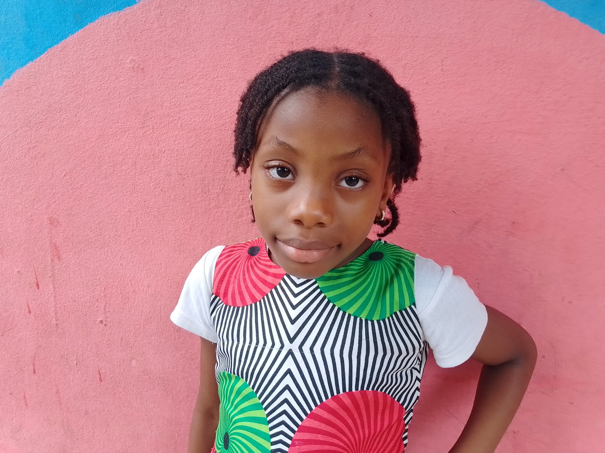
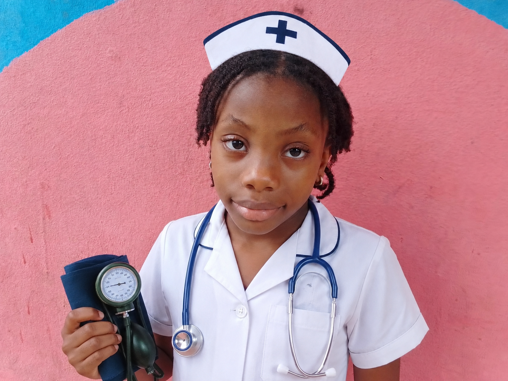

Welcome to my bright purple world of caring and helping!

Name: Chimamanda Agbo
Age: 7 Years Old
School: Famous Vine Montessori School
Class: Basic 1
"My favorite color is purple, and I love to help people feel better!"

When I grow up, I want to be a professional nurse. Nurses are real-life superheroes who wear scrubs instead of capes! Here is how I want to help:
I want to be right there by their side, making sure they feel safe, comfortable, and happy while they get better.
I want to help treat people when they are sick or hurt, giving them the right medicine and care to heal quickly.
This is a special place where I share stories and drawings about kindness, caring, and looking out for my friends at school.
Florence Nightingale: She was a very famous nurse who looked after soldiers a long time ago. She carried a lamp at night to check on them, showing how much she cared!
Whenever someone falls down or feels sad during playtime at Famous Vine Montessori School, I like to run over, check if they are okay, and help them find a teacher or give them a big smile to feel better.
As a future nurse, here are some fun and easy health tips for all my schoolmates to stay strong and healthy: